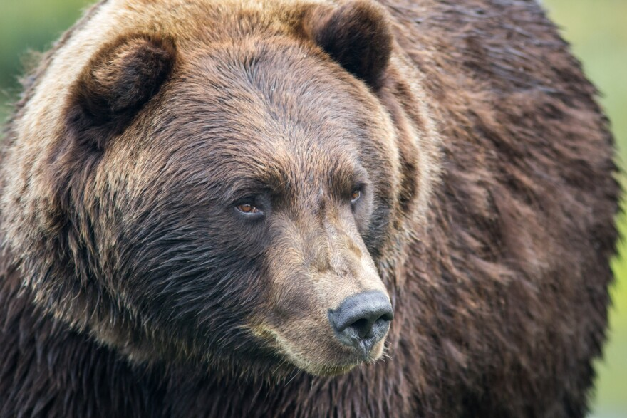
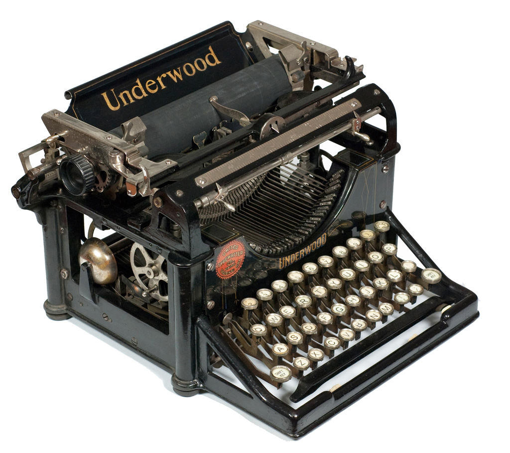

MY WORK
Here are some of my latest lorem work ipsum tipsum.
Click on the images to make them bigger



I love photography
A blog post is a single piece of content published on a blog, a shortened form of the now-archaic term weblog, which is an online platform for publishing written content. A blog can be a section of a website or a standalone website of its own. The blog you’re currently reading is an example of the former, while The Pioneer Woman is an example of the latter. Both are composed of blog posts, pieces of content that each cover a single topic and may (but don’t have to!) include images and videos alongside the written content. Written content is a key component of a blog post. A YouTube channel isn’t a blog because it’s purely video—it can be considered a vlog, short for video log. Similarly, a feed of purely still images, like an Instagram account, isn’t a blog. In the earlier days of social media, when platforms like MySpace and Live Journal dominated the scene, blogging and social media were much more entwined than they are today. Now, they’re largely separate, though many bloggers promote and cross-post their work on their social media accounts to drive traffic to their blogs and promote their personal brand.
My Name
Im really good at:
Photography
Web Design
Photoshop
Here are some of my latest lorem work ipsum tipsum.
Click on the images to make them bigger
I'd love your feedback!
Swing by for a cup of , or leave me a note: